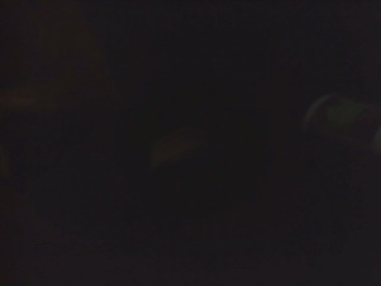

<!-- Página de control del robot que permite establecer su modo de operación, asignarle objetivos, y ejecutar o detener la sesión -->

{% extends "layout.html" %}

<!-- Define el estilo del icono del robot sobre el mapa y los botones de control -->
{% block body %}

    <!-- Es estilo del icono de la posición actual del robot -->
    <style>
        #map {
            position: relative;
        }
        .marker { 
            position: absolute;
            width: 20px;
            height: 20px;
            background: url("https://memegenerator.net/img/images/50x50/15141937.jpg") no-repeat 0 0;
        }
    </style>

    <div id="map" class="map"></div>
    <div id="geo-marker" class="marker"></div>

    <div class="container-p-5">
        <div class="row">
        
            <div class="col-md-12">
                <div id="modoActual" class="update-title">Modo de Operación: detectando modo...</div>
            </div>
                

            <div class="col-md-12">
                <div class="update-nag">
                    <div class="update-split"><i class="glyphicon glyphicon-refresh"></i></div>
                    <div id="estadoPiA" class="update-text">detectando estado de PiA...</div>
                </div>
            </div>
        
            <div class="col-md-12">
                <div class="update-nag">
                    <div class="update-split update-info"><i class="glyphicon glyphicon-folder-open"></i></div>
                    <div id="estadoArduinoA" class="update-text">detectando estado de ArduinoA...</div>
                </div>
            </div>
    
            <div class="col-md-12">
                <div class="update-nag">
                    <div class="update-split update-success"><i class="glyphicon glyphicon-leaf"></i></div>
                    <div id="estadoPiB" class="update-text">detectando estado de PiB...</div>
                </div>
            </div>
            
            <div class="col-md-12">
                <div class="update-nag">
                    <div class="update-split update-danger"><i class="glyphicon glyphicon-warning-sign"></i></div>
                    <div id="estadoArduinoB" class="update-text">detectando estado de ArduinoB...</div>
                </div>
            </div>
            
        </div>
    </div>
       
    <div class="container-p-6">

        <div class="row">

            <div class="col-md-12">
                <div class="update-title">Control</div>
            </div>
            <div class="col-md-12">
                <div class="btn-group">
                    <button type='button' class="btn btn-primary" onClick='pubModo(0);'>Emergencia</button>
                    <button type='button' class="btn btn-primary" onClick='pubModo(1);'>Inactivo</button>
                    <button type='button' class="btn btn-primary" onClick='pubModo(2);'>Navegación Autónoma</button>
                    <!-- <button type='button' class="btn btn-primary" onClick='pubModo(3);'>Sondeo</button> -->
                    <button type='button' class="btn btn-primary" onClick='pubModo(4);'>Navegación Manual</button>
                </div>
            </div>
            <div class="col-md-12">
                <div class="btn-group">
                    <button type='button' class="btn btn-primary" onClick='pubMarchaParo(0);'>Paro</button>
                    <button type='button' class="btn btn-primary" onClick='pubMarchaParo(1);'>Marcha</button>
                    <button type='button' class="btn btn-primary" onClick='pubAntena(0);'>RaspiGNSS</button>
                    <button type='button' class="btn btn-primary" onClick='pubAntena(1);'>Móvil</button>
                </div>
            </div>
        </div>
        
        <div class="container-p-7">
            <div class="row2">
                <div class="btn-group">
                    <button type='button' class="btn btn-primary"></button>
                    <button type='button' class="btn btn-primary" onmousedown='pubMoverCamara(1);' onmouseup='pubMoverCamara(0);'></button>
                    <button type='button' class="btn btn-primary"></button>
                </div>
                <div class="btn-group">
                    <button type='button' class="btn btn-primary" onmousedown='pubNavManual(2);' onmouseup='pubNavManual(0);'></button>
                    <button type='button' class="btn btn-primary" onmousedown='pubNavManual(1);' onmouseup='pubNavManual(0);'></button>
                    <button type='button' class="btn btn-primary" onmousedown='pubNavManual(3);' onmouseup='pubNavManual(0);'></button>
                </div>
            </div>
            <div class="row2">
                <div class="btn-group">
                    <button type='button' class="btn btn-primary" onmousedown='pubMoverCamara(3);' onmouseup='pubMoverCamara(0);'></button>
                    <button type='button' class="btn btn-primary"></button>
                    <button type='button' class="btn btn-primary" onmousedown='pubMoverCamara(4);' onmouseup='pubMoverCamarma(0);'></button>
                </div>
                <div class="btn-group">
                    <button type='button' class="btn btn-primary" onmousedown='pubNavManual(7);' onmouseup='pubNavManual(0);'></button>
                    <button type='button' class="btn btn-primary" onmousedown='pubNavManual(0);' onmouseup='pubNavManual(0);'></button>
                    <button type='button' class="btn btn-primary" onmousedown='pubNavManual(8);' onmouseup='pubNavManual(0);'></button>
                </div>
            </div>
            <div class="row2">
                <div class="btn-group">
                    <button type='button' class="btn btn-primary"></button>
                    <button type='button' class="btn btn-primary" onmousedown='pubMoverCamara(2);' onmouseup='pubMoverCamara(0);'></button>
                    <button type='button' class="btn btn-primary"></button>
                </div>
                <div class="btn-group">
                    <button type='button' class="btn btn-primary" onmousedown='pubNavManual(5);' onmouseup='pubNavManual(0);'></button>
                    <button type='button' class="btn btn-primary" onmousedown='pubNavManual(4);' onmouseup='pubNavManual(0);'></button>
                    <button type='button' class="btn btn-primary" onmousedown='pubNavManual(6);' onmouseup='pubNavManual(0);'></button>
                </div>
            </div>
        </div>

        <!--  -->
        
    

{% endblock %}
    </div> 

<!-- Establecer el centro del mapa -->
{% block script1 %}
<script>
    // Recibir el JSON de /verParcela
    var puntoCentro = JSON.parse({{ puntoCentro|tojson }});

    // Parsear el punto medio 
    var lon =  puntoCentro['xCentro']; 
    var lat =  puntoCentro['yCentro'];
</script>
{% endblock %}

<!-- FFFFFFFFFFFFFFFFFFFFFFFFFFFFFFFFFFFFFFFFFFFFFFFFFFFFFFFFFFFFFFFFFFFF -->
{% block script2 %}

    <script>
        
        var poli = {{ poli|tojson }};
        console.log("poli = ", poli);


        crearParcela(poli);
        
        function crearParcela(parcelaCoords){
            
            console.log("in crearParcela()");

            // Reescribir la capaGeom con los nuevos puntos
            capaGeom = new ol.layer.Vector({
                source: new ol.source.Vector({
                    features: [new ol.Feature({
                        geometry: new ol.geom.Polygon([parcelaCoords])
                    })]
                }),
            });
    
            // Añadir la nueva capaGeom al mapa
            map.addLayer(capaGeom);
        }

        // Generación de puntos objetivos sobre el mapa --------------------------------------------------------------------------------------------


        // Recibir las coordenadas objetivas de /controlRobot
        var coordObjs = {{ coordObjs }};

        // Crear puntos (features) con las coordenadas objetivas
        var puntosObjs = [];
        for (var i = 0; i < coordObjs.length; i++)
        {            
            puntosObjs.push(
                new ol.Feature({
                    geometry: new ol.geom.Point(coordObjs[i]),
                    name: 'puntoObj'
                })
            );

            //capaCoordObjs.addFeature(coordObjs[i]);
        }

        console.log("puntosObjs = ", puntosObjs)
        //capaCoordObjs.addFeatures([puntosObjs]);

        // Crear una capa con los puntos objetivos
        capaCoordObjs = new ol.layer.Vector({
            source: new ol.source.Vector({
                features: puntosObjs
            }),
            style: stylePObj
        });

        // Añadir al mapa la capa de puntos objetivos
        map.addLayer(capaCoordObjs);

        // Al hacer click sobre un punto objetivo, enviar sus coordenadas a PiA (/controlRobot)
        map.on("click", function(e){

            // Crear un objeto JSON para la sesión y asignarle el identificador de la sesión utilizado por /controlRobot
            var sesión = new Object();
            sesión.idSesión = {{ idSesión }};

            // Añadir al JSON las coordenadas del punto objetivo seleccionado
            map.forEachFeatureAtPixel(e.pixel, function (feature, layer){
                if (layer == capaCoordObjs)
                    sesión.coordObj = feature.getGeometry().getCoordinates();
                    console.log("in forEachFeatureAtPixel sesión = ", sesión);
            })

            console.log("before Ajax coordObj = ", JSON.stringify(sesión));

            // Enviar a /controlRobot los datos de la sesión a ejecutar
            $.ajax({
                type: 'POST',
                contentType: 'application/json',
                data: JSON.stringify(sesión), 
                dataType: 'json',
                url: '/controlRobot',
                success: function () {
                    console.log("ajaxed coordObj");    // mantenerse en la página por si hay más objetivos a realizar           
                },
                error: function() {
                    alert("Error en Ajax de controlRobot.html");
                }
            });
        });

        
        // Generación de la trayectoria objetiva sobre el mapa --------------------------------------------------------------------------------------------
        
        // Capa de figuras (polígonos, líneas, puntos, etc.) que se dibujan sobre la capa ráster
        var capaTrayectoriaObj = new ol.layer.Vector({
            source: source
        });

        //capaTrayectoriaObj.removeFeatures();

        // Recibir de /_cr la trayectoria generada por PiA
        var $SCRIPT_ROOT = {{ request.script_root|tojson|safe }};
        (function () {
            $.getJSON(
                $SCRIPT_ROOT + "/_cr", // Ajax route (de dónde viene trayectoria)
                function(data){

                    // Recoger la trayectoria generada por PiA y enviada como JSON por /_cr
                    var trayectoriaPiA = data.trayectoria;

                    console.log("trayectoriaPiA = ", trayectoriaPiA);

                    // Convertir la trayectoria de PiA al formato requerido por la función crearTrayObj (un array de arrays) 
                    var trayectoriaObj = []; 
                    for(var i = 0; i < trayectoriaPiA.length;i++){

                        // Extraer y añadir las coordenadas a trayectoriaObj
                        var lonObj = trayectoriaPiA[i][0];
                        var latObj = trayectoriaPiA[i][1];
                        trayectoriaObj.push([lonObj,latObj]);
                    }
                    
                    console.log("trayectoriaObj = ", trayectoriaObj);

                    // Reemplazar la capa de trayectoria objetiva anterior por una nueva
                    map.removeLayer(capaTrayectoriaObj);
                    crearTrayObj(trayectoriaObj);
                }
            );

            // Actualizar la trayectoria objetiva cada 5 segundos (típicamente no cambia)
            setTimeout(arguments.callee, 5000);
        })();

        // Crear la trayectoria objetiva sobreescribiendo la capaTrayectoriaObj de layout.html y añadiendo los segmentos de línea de la nueva trayectoria objetiva
        function crearTrayObj(vectorTrayectoria){
            
            // Reescribir la capaTrayectoriaObj con los nuevos puntos
            capaTrayectoriaObj = new ol.layer.Vector({
                source: new ol.source.Vector({
                    features: [new ol.Feature({
                        geometry: new ol.geom.LineString(vectorTrayectoria)
                    })]
                }),
                style: new ol.style.Style({
                    stroke: new ol.style.Stroke({color : [0, 255, 0, 1], width : 3})
                })
            });

            // Añadir la nueva capaTrayectoriaObj al mapa
            map.addLayer(capaTrayectoriaObj);
        }
        

        // Botones de control del robot --------------------------------------------------------------------------------------------

        // Recibir de /_md el modo de operación para mostrarlo en la página
        var $SCRIPT_ROOT = {{ request.script_root|tojson|safe }};
        (function () {
            $.getJSON(
                $SCRIPT_ROOT + "/_md", // Ajax route (de dónde viene coordAct)
                function(data){

                    // Recoger el modo del sistema y los estados enviados como JSON por /_md
                    var modo = data.modo;
                    var estadoPiA = data.estadoPiA;
                    var estadoArduinoA = data.estadoArduinoA;
                    var estadoPiB = data.estadoPiB;
                    var estadoArduinoB = data.estadoArduinoB;

                    document.getElementById("modoActual").innerHTML = "Modo de Operación: " + modo;
                    document.getElementById("estadoPiA").innerHTML = estadoPiA;
                    document.getElementById("estadoArduinoA").innerHTML = estadoArduinoA;
                    document.getElementById("estadoPiB").innerHTML = estadoPiB;
                    document.getElementById("estadoArduinoB").innerHTML = estadoArduinoB;
                }
            );

            // Actualizar el modo cada 1 segundo (típicamente no cambia)
            setTimeout(arguments.callee, 1000);
        })();


        // Establecer el modo de operación del robot
        function pubModo(valor)
        {
            // Crear un objeto JSON para la señal de control y asignarle el modo elegido
            var control = new Object();
            control.modo = valor;

            console.log("before Ajax control = ", JSON.stringify(control));

            // Enviar a /controlRobot el modo elegido
            $.ajax({
                type: 'POST',
                contentType: 'application/json',
                data: JSON.stringify(control), 
                dataType: 'json',
                url: '/controlRobot',
                success: function () {
                    console.log("ajaxed modo");    // mantenerse en la página para seleccionar el punto objetivo           
                },
                error: function() {
                    alert("Error en Ajax de controlRobot.html");
                }
            });
        }

        // Establecer la marcha o paro del robot
        function pubMarchaParo(valor)
        {
            // Crear un objeto JSON para la señal de control y asignarle la marcha o paro
            var control = new Object();
            control.marchaOparo = valor;

            console.log("before Ajax control = ", JSON.stringify(control));

            // Enviar a /controlRobot la la señal de marcha o paro
            $.ajax({
                type: 'POST',
                contentType: 'application/json',
                data: JSON.stringify(control), 
                dataType: 'json',
                url: '/controlRobot',
                success: function () {
                    console.log("ajaxed marcha o paro");    // mantenerse en la página por si hay más objetivos a realizar           
                },
                error: function() {
                    alert("Error en Ajax de controlRobot.html");
                }
            });
        }

//        var timeout;
//        $('#moverCamaraArriba').mousedown(function(){
//            timeout = setInterval(function(){
//                pubMoverCamara(1); 
//            }, 100);
//
//            return false;
//        });
//        $('#moverCamaraAbajo').mousedown(function(){
//            timeout = setInterval(function(){
//                pubMoverCamara(2); 
//            }, 100);
//
//            return false;
//        });
//
//
//        $(document).mouseup(function(){
//            clearInterval(timeout);
//            return false;
//        });

        // Configures an element to execute a function periodically whilst it holds the user's attention via a mouse press and hold.
        //function assertPeriodicPress(id, action, interval) {
            // Listen for the MouseDown event.
        //    document.getElementById(id).addEventListener('mousedown', function(ev) { action(); timeout = setInterval(action, interval); return false; }, false);
            // Listen for mouse up events.
        //    document.getElementById(id).addEventListener('mouseup', function(ev) { clearInterval(timeout); return false; }, false);
            // Listen out for touch end events.
        //    document.getElementById(id).addEventListener('touchend', function(ev) { clearInterval(timeout); return false; }, false);
        //} // Source: https://stackoverflow.com/questions/3977091/jquery-mousedown-effect-while-left-click-is-held-down

        // Establecer la marcha o paro del robot
        function pubMoverCamara(valor)
        {
            console.log("valor = ", valor);

            // Crear un objeto JSON para la señal de control y asignarle la marcha o paro
            var control = new Object();
            control.moverCamara = valor;

            console.log("before Ajax control = ", JSON.stringify(control));

            // Enviar a /controlRobot la la señal de marcha o paro
            $.ajax({
                type: 'POST',
                contentType: 'application/json',
                data: JSON.stringify(control), 
                dataType: 'json',
                url: '/controlRobot',
                success: function () {
                    console.log("ajaxed moverCamara");    // mantenerse en la página por si hay más objetivos a realizar           
                },
                error: function() {
                    alert("Error en Ajax de controlRobot.html");
                }
            }); 
        }
        
        // Establecer la marcha o paro del robot
        function pubNavManual(valor)
        {
            console.log("valor = ", valor);

            // Crear un objeto JSON para la señal de control y asignarle la marcha o paro
            var control = new Object();
            control.navManual = valor;

            console.log("before Ajax control = ", JSON.stringify(control));

            // Enviar a /controlRobot la la señal de marcha o paro
            $.ajax({
                type: 'POST',
                contentType: 'application/json',
                data: JSON.stringify(control), 
                dataType: 'json',
                url: '/controlRobot',
                success: function () {
                    console.log("ajaxed navManual");    // mantenerse en la página por si hay más objetivos a realizar           
                },
                error: function() {
                    alert("Error en Ajax de controlRobot.html");
                }
            }); 
        }
        

        // Elegir la antena GPS
        function pubAntena(valor)
        {
            console.log("valor = ", valor);

            // Crear un objeto JSON para la señal de control y asignarle la marcha o paro
            var control = new Object();
            control.antena = valor;

            console.log("before Ajax control = ", JSON.stringify(control));

            // Enviar a /controlRobot la la señal de marcha o paro
            $.ajax({
                type: 'POST',
                contentType: 'application/json',
                data: JSON.stringify(control), 
                dataType: 'json',
                url: '/controlRobot',
                success: function () {
                    console.log("ajaxed antena");    // mantenerse en la página por si hay más objetivos a realizar           
                },
                error: function() {
                    alert("Error en Ajax de controlRobot.html");
                }
            }); 
        }

        // Generación de la trayectoria actual sobre el mapa --------------------------------------------------------------------------------------------

        // Valores iniciales de la posición del robot
        var latRobot = 40;      
        var lonRobot = -3;

        // Crear la trayectoria actual y la capa que la contendrá
        var trayectoriaAct = []; 
        var capaTrayectoriaAct;

        var latRobotPrev = 0;
        var lonRobotPrev = 0;

        // Recibir de /_pr las coordenadas actuales provenientes de PiA
        var $SCRIPT_ROOT = {{ request.script_root | tojson | safe }};
        (function () {
            $.getJSON(
                $SCRIPT_ROOT + "/_pr", // Ajax route (de dónde viene coordAct)
                function (data){

                    //console.log("data", data);

                    // Extraer y añadir las coordenadas a trayectoriaAct
                    latRobot = data.latr
                    lonRobot = data.lonr
                    
                    if (latRobot != latRobotPrev || lonRobot != lonRobotPrev)
                    {
                        trayectoriaAct.push([lonRobot, latRobot]); 
                        console.log("trayectoriaAct", trayectoriaAct);

                        // Reemplazar la capa de trayectoria actual anterior por una nueva                        
                        map.removeLayer(capaTrayectoriaAct);
                        crearTrayActP(lonRobot, latRobot);

                        lonRobotPrev = lonRobot;
                        latRobotPrev = latRobot;    
                    }
                }
            );

            // Actualizar la trayectoria actual cada 350 milisegundos
            setTimeout(arguments.callee, 350);
        })();

        // Crear la trayectoria actual sobreescribiendo la capaTrayectoriaAct de controlRobot.html y añadiendo los segmentos de línea de la nueva trayectoria actual
        function crearTrayAct(vectorTrayectoria){

            // Reescribir la capaTrayectoriaAct con los nuevos puntos
            capaTrayectoriaAct = new ol.layer.Vector({
                source: new ol.source.Vector({
                    features: [new ol.Feature({
                        geometry: new ol.geom.LineString(vectorTrayectoria)
                    })]
                }),
                // Distinguir la trayectoria actual de la trayectoria objetiva con un color distinto
                style: new ol.style.Style({
                    stroke: new ol.style.Stroke({color : [255, 0, 0, 1], width : 3})
                })
            });

            // Añadir la nueva capaTrayectoriaAct al mapa
            map.addLayer(capaTrayectoriaAct);
        }

        function crearTrayActP(lonR, latR){

            var styleP = new ol.style.Style({
                fill: new ol.style.Fill({
                    color: 'rgba(255, 0, 0, 0.3)'
                }),
                stroke: new ol.style.Stroke({
                    width: 2,
                    color: 'rgba(255, 0, 0, 0.8)'
                }),
                image: new ol.style.Circle({
                    fill: new ol.style.Fill({
                        color: 'rgba(255, 0, 0, 0.5)'
                    }),
                    stroke: new ol.style.Stroke({
                        width: 1,
                        color: 'rgba(255, 0, 0, 0.8)'
                    }),
                    radius: 2
                }),
            });

            // Reescribir la capaTrayectoriaAct con los nuevos puntos
            capaTrayectoriaAct = new ol.layer.Vector({
                source: new ol.source.Vector({
                    features: [new ol.Feature({
                        geometry: new ol.geom.Point([lonR, latR])
                    })]
                }),
                // Distinguir la trayectoria actual de la trayectoria objetiva con un color distinto
                style: styleP
            });

            // Añadir la nueva capaVector al mapa
            map.addLayer(capaTrayectoriaAct);
        }

        // La posición actual del robot se representa con un icono
        iconoPosAct = new ol.Overlay({
            position: [-3.5, 40],       // valor inicial
            positioning: 'top-center',
            offset: [0, 0],
            element: document.getElementById('geo-marker'),
            stopEvent: false
        });
        map.addOverlay(iconoPosAct);

        // Refrescar la posición actual cada 300 milisegundos
        setInterval(function(){
            if (lonRobot != 0 && latRobot !=0)
                iconoPosAct.setPosition([lonRobot, latRobot])
        }, 300);
        
        console.log("estadoPiA~ ", {{ estadoPiA }});
    </script>

{% endblock %}
